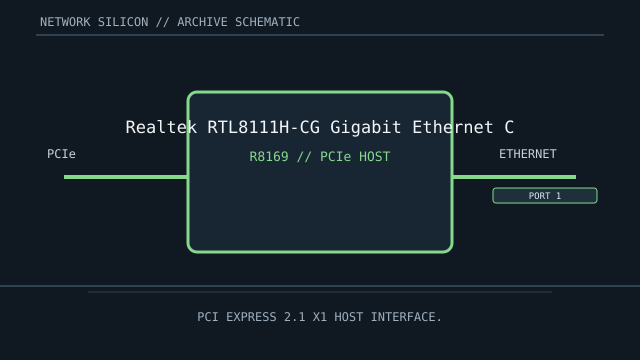

[ MODEL-SPECIFIC NETWORK HARDWARE ]
Realtek RTL8111H-CG Gigabit Ethernet Controller
Single-port Gigabit Ethernet controller IC commonly integrated on client motherboards and PCIe cards. This is a controller/chip record; finished-card details are implementation-specific.

IDENTIFICATION: Match complete component top-mark, stepping and board revision. Nominal signaling rates are not measurements of application throughput.
Exact specifications and compatibility
| Dedicated subcategory | Ethernet controllers and PHYs |
|---|---|
| Exact controller identity | Realtek RTL8111H-CG Gigabit Ethernet Controller |
| Component / board identity | Integrated 10/100/1000BASE-T MAC/PHY controller; board supplies connector and Ethernet magnetics. |
| PCIe bus and host interface | PCI Express 2.1 x1 host interface. |
| Ethernet ports / physical interface | One 10/100/1000BASE-T port; auto-negotiation selects a rate supported by the partner and cabling. |
| Nominal rate (not measured) | Up to 1 Gb/s nominal on one port; not measured throughput. |
| Drivers and OS compatibility | Linux r8169 driver is included in the kernel; Realtek distributes Windows drivers for supported OS releases and product revisions. Confirm device ID and OEM motherboard support before installation. |
| Board / system compatibility | Requires board-level power, PCIe x1, reference clock/reset, magnetics and RJ-45 wiring. Chip-level support does not guarantee a particular motherboard’s firmware or vendor driver availability. |
| Revision and variant warning | RTL8111H-CG is a specific RTL8111-family revision; it is not a finished NIC SKU and should not be equated with every RTL8111 board or replacement package. |
| Measured throughput | No measured benchmark is claimed for a physical specimen. A valid result records the host, link partner, medium, driver/firmware, traffic pattern, test tool and duration. |
Identification and revision notes
RTL8111H-CG is a specific RTL8111-family revision; it is not a finished NIC SKU and should not be equated with every RTL8111 board or replacement package.
Linux r8169 driver is included in the kernel; Realtek distributes Windows drivers for supported OS releases and product revisions. Confirm device ID and OEM motherboard support before installation.
Requires board-level power, PCIe x1, reference clock/reset, magnetics and RJ-45 wiring. Chip-level support does not guarantee a particular motherboard’s firmware or vendor driver availability.
Archival and preservation notes
Record complete chip mark, package condition, board revision and PCI IDs. Avoid removing the IC from its PCB unless the purpose and ESD/rework controls are documented.
For an installed specimen, preserve source URL, access date, source revision and label/condition notes. Do not infer connector count or board-level compatibility from controller family name alone.
Manufacturer and driver sources
- Realtek PCIe Ethernet driversOfficial controller software catalogue for the RTL8111-family PCIe Ethernet devices.
- Linux kernel Realtek r8169 driver sourceLinux r8169 driver implementation for Realtek PCIe Ethernet controllers.
Sources cover the named controller family and its relevant driver ecosystem. The exact board vendor’s compatibility list takes precedence for a finished adapter or motherboard implementation.